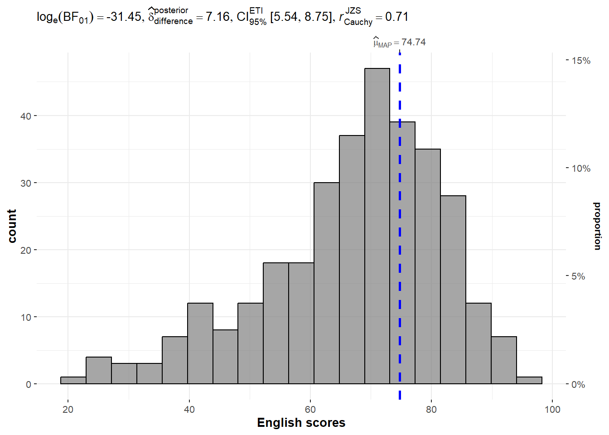
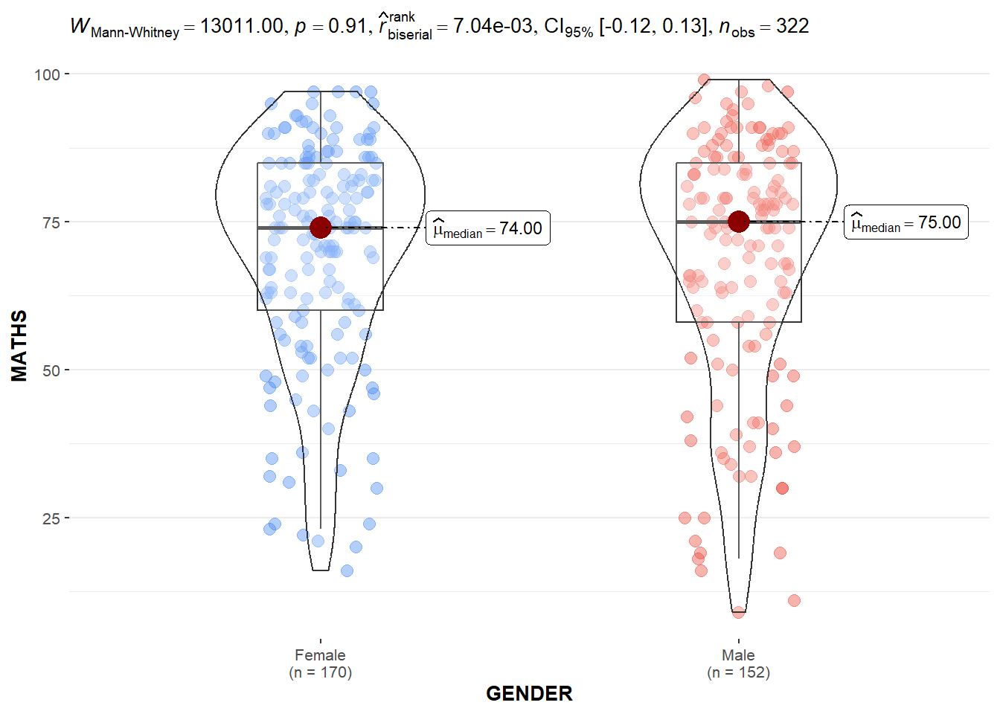
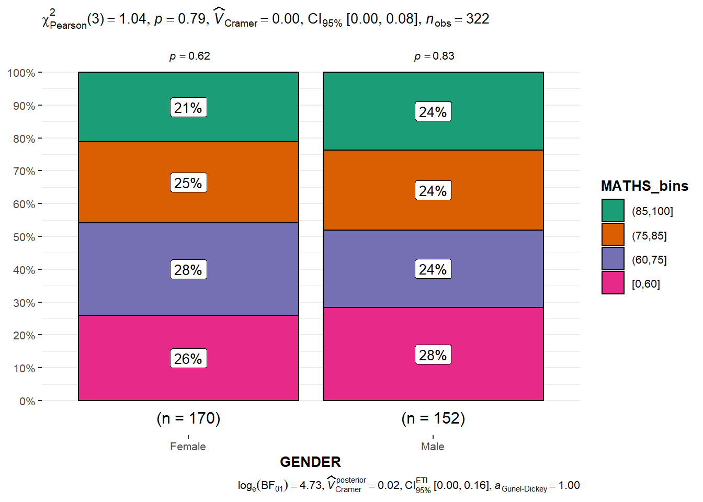
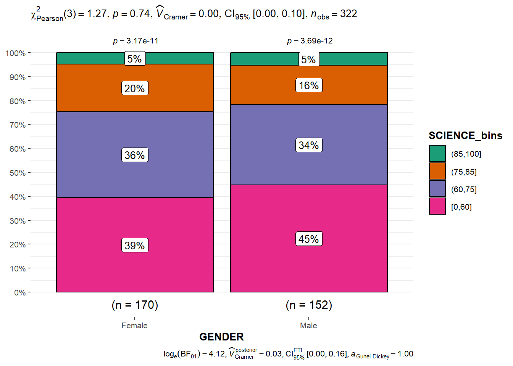
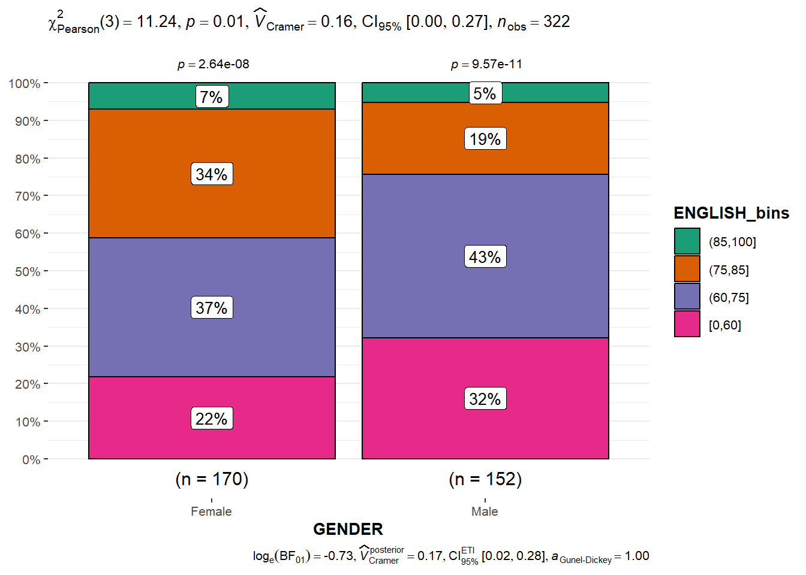
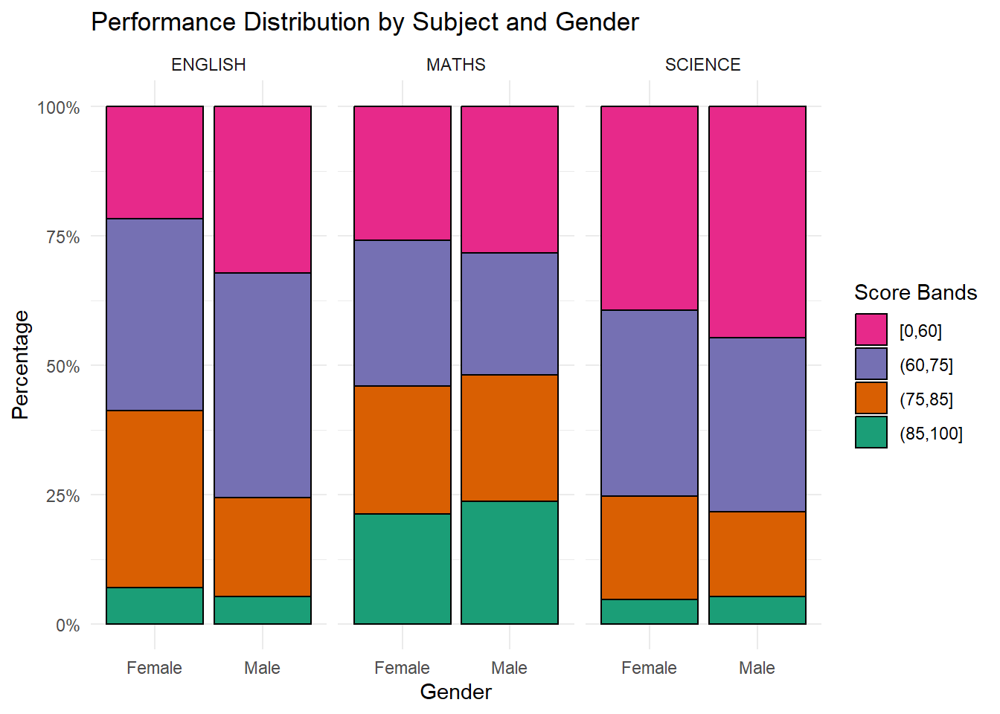
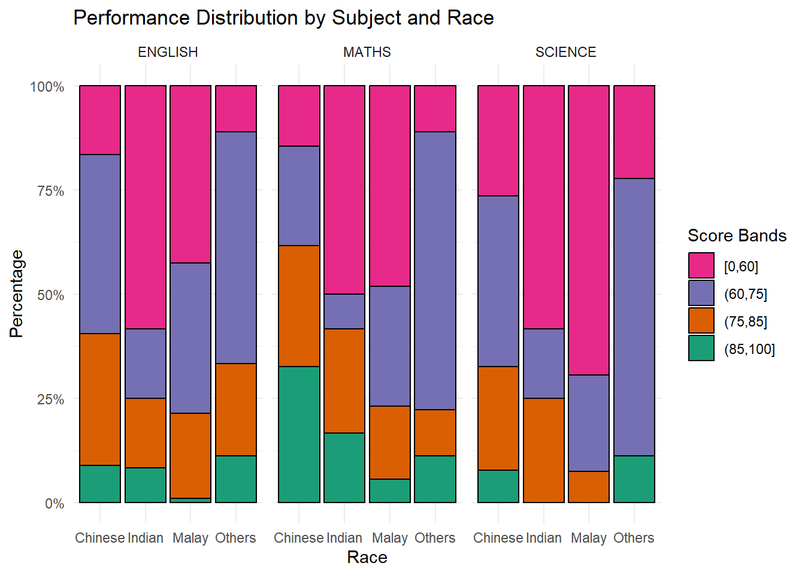

pacman::p_load(ggstatsplot, tidyverse)Hands-on Exercise 4 Part 2
6. Visual Statistical Analysis
6.1 Learning Outcome
Gain hands-on experience on using:
ggstatsplot package to create visual graphics with rich statistical information,
performance package to visualise model diagnostics, and
parameters package to visualise model parameters
6.2 Visual Statistical Analysis with ggstatsplot
ggstatsplot is an extension of ggplot2 package for creating graphics with details from statistical tests included in the information-rich plots themselves.
To provide alternative statistical inference methods by default.
To follow best practices for statistical reporting. For all statistical tests reported in the plots, the default template abides by the [APA](https://my.ilstu.edu/~jhkahn/apastats.html) gold standard for statistical reporting. For example, here are results from a robust t-test:

6.3 Getting Started
6.3.1 Installing and launching R packages
In this exercise, ggstatsplot and tidyverse will be used.
6.3.2 Importing Data
exam_data <- read_csv("Exam.csv")
exam_data# A tibble: 322 × 7
ID CLASS GENDER RACE ENGLISH MATHS SCIENCE
<chr> <chr> <chr> <chr> <dbl> <dbl> <dbl>
1 Student321 3I Male Malay 21 9 15
2 Student305 3I Female Malay 24 22 16
3 Student289 3H Male Chinese 26 16 16
4 Student227 3F Male Chinese 27 77 31
5 Student318 3I Male Malay 27 11 25
6 Student306 3I Female Malay 31 16 16
7 Student313 3I Male Chinese 31 21 25
8 Student316 3I Male Malay 31 18 27
9 Student312 3I Male Malay 33 19 15
10 Student297 3H Male Indian 34 49 37
# ℹ 312 more rows6.3.3 One-sample test: gghistostats() method
In the code chunk below, gghistostats() is used to to build an visual of one-sample test on English scores.
set.seed(1234)
gghistostats(
data = exam_data,
x = ENGLISH,
type = "bayes",
test.value = 60,
xlab = "English scores"
)
Default information: - statistical details - Bayes Factor - sample sizes - distribution summary
6.3.4 Unpacking the Bayes Factor
A Bayes factor is the ratio of the likelihood of one particular hypothesis to the likelihood of another. It can be interpreted as a measure of the strength of evidence in favor of one theory among two competing theories.
That’s because the Bayes factor gives us a way to evaluate the data in favor of a null hypothesis, and to use external information to do so. It tells us what the weight of the evidence is in favor of a given hypothesis.
When we are comparing two hypotheses, H1 (the alternate hypothesis) and H0 (the null hypothesis), the Bayes Factor is often written as B10. It can be defined mathematically as:

- The Schwarz criterion is one of the easiest ways to calculate rough approximation of the Bayes Factor.
6.3.5 How to interpret Bayes Factor
A Bayes Factor can be any positive number. One of the most common interpretations is this one—first proposed by Harold Jeffereys (1961) and slightly modified by Lee and Wagenmakers in 2013:

6.3.6 Two-sample mean test: ggbetweenstats()
In the code chunk below, ggbetweenstats() is used to build a visual for two-sample mean test of Maths scores by gender.
ggbetweenstats(
data = exam_data,
x = GENDER,
y = MATHS,
type = "np",
messages = FALSE
)
Default information: - statistical details - Bayes Factor - sample sizes - distribution summary
6.3.7 Oneway ANOVA Test: ggbetweenstats() method
In the code chunk below, ggbetweenstats() is used to build a visual for One-way ANOVA test on English score by race.
“ns” → only non-significant
“s” → only significant
“all” → everything
ggbetweenstats(
data = exam_data,
x = RACE,
y = ENGLISH,
type = "p",
mean.ci = TRUE,
pairwise.comparisons = TRUE,
pairwise.display = "s",
p.adjust.method = "fdr",
messages = FALSE
)
Default information: - statistical details - Bayes Factor - sample sizes - distribution summary
6.3.7.1 ggbetweenstats - Summary of tests


6.3.8 Significant Test of Correlation: ggscatterstats()
In the code chunk below, ggscatterstats() is used to build a visual for Significant Test of Correlation between Maths scores and English scores.
ggscatterstats(
data = exam_data,
x = MATHS,
y = ENGLISH,
marginal = FALSE,
)
6.3.9 Significant Test of Association (Depedence) : ggbarstats() methods
In the code chunk below, the Maths scores is binned into a 4-class variable by using cut().
exam1 <- exam_data %>%
mutate(
MATHS_bins = cut(
MATHS,
breaks = c(0, 60, 75, 85, 100),
include.lowest = TRUE
),
MATHS_bins = factor(
MATHS_bins,
levels = c("(85,100]", "(75,85]", "(60,75]", "[0,60]")
)
)In this code chunk below ggbarstats() is used to build a visual for Significant Test of Association
ggbarstats(
data = exam1,
x = MATHS_bins,
y = GENDER
) +
scale_fill_manual(
values = c(
"(85,100]" = "#1B9E77", # green
"(75,85]" = "#D95F02", # orange
"(60,75]" = "#7570B3", # purple
"[0,60]" = "#E7298A" # pink
)
)
Exploration
Significant Test of Association - for Science
exam1 <- exam_data %>%
mutate(
SCIENCE_bins = cut(
SCIENCE,
breaks = c(0, 60, 75, 85, 100),
include.lowest = TRUE
),
SCIENCE_bins = factor(
SCIENCE_bins,
levels = c("(85,100]", "(75,85]", "(60,75]", "[0,60]")
)
)ggbarstats(
data = exam1,
x = SCIENCE_bins,
y = GENDER
) +
scale_fill_manual(
values = c(
"(85,100]" = "#1B9E77", # green
"(75,85]" = "#D95F02", # orange
"(60,75]" = "#7570B3", # purple
"[0,60]" = "#E7298A" # pink
)
)
Significant Test of Association - for English
exam1 <- exam_data %>%
mutate(
ENGLISH_bins = cut(
ENGLISH,
breaks = c(0, 60, 75, 85, 100),
include.lowest = TRUE
),
ENGLISH_bins = factor(
ENGLISH_bins,
levels = c("(85,100]", "(75,85]", "(60,75]", "[0,60]")
)
)ggbarstats(
data = exam1,
x = ENGLISH_bins,
y = GENDER
) +
scale_fill_manual(
values = c(
"(85,100]" = "#1B9E77", # green
"(75,85]" = "#D95F02", # orange
"(60,75]" = "#7570B3", # purple
"[0,60]" = "#E7298A" # pink
)
)
Combining the 3 subjects into 1 plot
Performance Distribution by Subject and Gender
exam_long <- exam_data %>%
pivot_longer(
cols = c(MATHS, SCIENCE, ENGLISH),
names_to = "Subject",
values_to = "Score"
) %>%
mutate(
Score_bins = cut(
Score,
breaks = c(0, 60, 75, 85, 100),
include.lowest = TRUE
),
Score_bins = factor(
Score_bins,
levels = c("[0,60]", "(60,75]", "(75,85]", "(85,100]")
)
)
ggplot(exam_long,
aes(x = GENDER, fill = Score_bins)) +
geom_bar(position = "fill", color = "black") +
facet_wrap(~ Subject) +
scale_y_continuous(labels = scales::percent) +
scale_fill_manual(
values = c(
"[0,60]" = "#E7298A",
"(60,75]" = "#7570B3",
"(75,85]" = "#D95F02",
"(85,100]" = "#1B9E77"
),
name = "Score Bands"
) +
labs(
title = "Performance Distribution by Subject and Gender",
x = "Gender",
y = "Percentage"
) +
theme_minimal()
Observations:
Among the 3 subjects, English exhibits the strongest observable relationship between gender and academic performance, while Mathematics and Science show minimal gender-based differences. The findings suggest that gender-related variation in performance is more pronounced in language-based subjects than in quantitative subjects within this dataset.
Performance Distribution by Subject and Race
exam_long_race <- exam_data %>%
pivot_longer(
cols = c(MATHS, SCIENCE, ENGLISH),
names_to = "Subject",
values_to = "Score"
) %>%
mutate(
Score_bins = cut(
Score,
breaks = c(0, 60, 75, 85, 100),
include.lowest = TRUE
),
Score_bins = factor(
Score_bins,
levels = c("[0,60]", "(60,75]", "(75,85]", "(85,100]")
)
)
ggplot(exam_long_race,
aes(x = RACE, fill = Score_bins)) +
geom_bar(position = "fill", color = "black") +
facet_wrap(~ Subject) +
scale_y_continuous(labels = scales::percent) +
scale_fill_manual(
values = c(
"[0,60]" = "#E7298A",
"(60,75]" = "#7570B3",
"(75,85]" = "#D95F02",
"(85,100]" = "#1B9E77"
),
name = "Score Bands"
) +
labs(
title = "Performance Distribution by Subject and Race",
x = "Race",
y = "Percentage"
) +
theme_minimal()
Observations:
Across all three subjects, Chinese and “Others” generally demonstrate stronger representation in higher performance categories, while Malay students appear more concentrated within the lower score bands. English and Mathematics display more distinct differences across racial groups compared to Science.
However, the chart represents proportional distributions rather than statistical significance. Therefore, while observable differences exist visually, further statistical testing would be required to determine whether these differences are statistically meaningful.